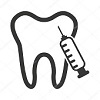

A service you can trust.
MEDICAL EXCELLENCE
The Foundation for Medical Excellence promotes quality health care and sound health policy through physician education, research & other collaborative efforts.
Our educational offerings center on contemporary medical issues facing practicing physicians—communication, leadership, physician well-being, and the challenges of providing universal health care.
HEALTHCARE PROFESSIONALS
A health professional may operate within all branches of health care, including medicine, surgery, dentistry, midwifery, pharmacy, psychology, nursing or allied health professions. A health professional may also be a public/community health expert working for the common good of the society.

LATEST TECHNOLOGIES
Virtual reality for medical experience;
Food scanners;
Wireless brain sensors;
Robotic surgery;
Three-dimensional printed body parts;
A life-changing antibiotic;
Cell-free fetal DNA testing;
Artificial Intelligence;
Blockchain for Healthcare;
Internet of Medical Things;
and much more.
DR.LAURA RENOLDS
_______________________
Director, Orthopedics & Joint Replacement
Served in the Army Medical Corps for five years.Worked as a professional and teaching experience as Senior Resident at Safadarjung Hospital.Attached as Associate/Visiting Consultant with Sitaram Bhartia, Apollo and Max Hospital for the last 15 years.
Joined Hulhumale in Jan, 2010.
OPD Timings : Mon-Sat, 10 AM-5PM
DR. PAUL SMITH
_______________________
Sr. Consultant Orthopedics & Joint Replacement
9 years+ experience in Neonatology including 2 years training from Australia & 1.5 years stint at Fortis Memorial Research Institute,Berline.
Currently, President, UK Academy of Paediatrics.
Also a forefront member of Round Table UK, London Round Table (263), a charitable organization conducting various social activities.
OPD Timings : Mon-Sat 10, 10 AM-8PM
DR.JENNIFER GRAY
_______________________
Sr. Consultant & HOD, Radiation Oncology
Trained at Jaslok Hospital, Mumbai from 2001 to 2004
Senior Residency in Bibi Cancer Hospital, Melbourne from 2004 to 2005
Senior Resident in Olad Institute of Medical Sciences, Sydney from 2005 to 2007
Consultant at Apollo Cancer Hospital and Research Centre, Sydney from 2007 to 2010
OPD Timings : Mon-Sat, 11 AM-10PM
DR.ANTONY TOMER
_______________________
Sr. Consultant, Dermatology
Won Dr. Ferdinand Handa Award for Best Paper Presentation in the award paper session at Dermacon, 2006
Won various National & International Quizes in Dermatology.Having experience of 8 years in Gold Coast international hospital.
OPD Timings : Mon-Sat 10, 10 AM-8PM
Primary Health Care
__________________________________
At its heart, primary health care is about caring for people, rather than simply treating specific diseases or conditions.90% of a person's health needs across their lifetime can be covered by primary health care.PHC is therefore the first element of the care continuum.
Pediatric Clinic
__________________________________
Pediatric Clinic is a provider based Rural Health Clinic developed by Abbeville General Hospital to help serve the community healthcare needs.Our mission is to provide consistent, timely, compassionate, and innovative high quality medical care to the children and adolescents of our community.
Gynaecological Clinic
__________________________________
The common gynaecological problems that present to a gynaecological clinic:
Irregular periods;
Bleeding between periods;
Lower abdominal pain;
Abnormal vaginal discharge;
Menopausal problems and many daily care problems.
Opthalmology Clinic
__________________________________
Our ophthalmologists treat thousands of patients with a wide variety of eye conditions. This high volume provides us with extensive experience that translates to the best possible care for our patients. Ophthalmologists share the expertise of the team and the importance of one-stop, comprehensive eye care.
Cardiac Clinic
__________________________________
A comprehensive cardiac outpatient evaluation from an expert in Cardiology supported by diligently performed cardiac testing using some of the best equipment in a safe environment is the highlight of the Clinic. The Clinic will be your trusted guide for the right advice for cardiac problems. Indeed , at the Clinic, “Your heart is in safe hands”.
Outpatient Surgery
__________________________________
Ambulatory surgery centers (ASC), also known as outpatient surgery centers, same day surgery centers, or surgicenters, are health care facilities where surgical procedures not requiring an overnight hospital stay are performed. Such surgery is commonly less complicated than that requiring hospitalization.Studies have shown that outpatient surgery is as safe as or safer than inpatient surgery.
The facility of this hospital is very good and it has a supporting staff which guides all the time. The doctors in the hospital are experienced and are up to the mark when it comes to giving the correct advice.Its been convenient for me. I would like to thank them for their help and support.
Mrs. Reeta Smith
I don't have enough kind words to say about the Hulhumale Hospital. They are amazing from the doctors to the nurses. It's such a special place that goes above and beyond, may God continue to bless them all and continued success for years to come.
Mr. Charlie Paul
Hulhumale hospital is the best breast cancer hospital. They helpe my Mother to recover fast. Overall management of the hospital is excellent. Nurse encourages my mother to keep calm and relaxed which was more important for her at that time.
Mr. Megan Swift